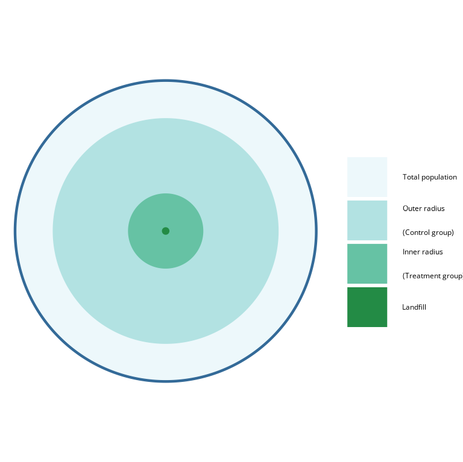

A set of R functions that complement my masters thesis.
There, I analyze the effect of landfills on the nearby population. I vary 2 parameters:
-
inner radius
defines the dummy variable of interest, living close to a landfill. -
outer radius
excludes population that lives too far from any landfill.

With this package, one can create donut_lists: lists of regressions with varying inner and outer radius. There are also functions to interpret the regressions.
Installation
Run the following line in R to install this package:
remotes::install_github("szeller42/donutsR")
Functions
-
donut_modelscreates adonut_list. -
plot_significanceplots the summary for one parameter of interest. -
donut_summaryoutputs amodelsummarytable, specifically tailored todonut_models.
donut_models takes a data frame with a distance parameter dist_km, which determines the distance to a relevant geometry for all or some rows. It also takes two distance vectors: for the inner radius (inner) and the outer (outer). The function then performs a feols regression with clustered standard errors. It outputs a donut_list, which includes additional list element with the distance parameters. Additional parameters can be used for the following robustness checks:
- Landfill-cluster-bootstrapped standard errors for the treatment dummy
- Conley standard errors for all independent variables
- Excluding the n largest clusters
- Excluding observations within k distance-units of the landfills
Application
An example of where I used this package can be found here. It is the online appendix of my masters thesis, where I analyse the impact of landfills on residents. The analysis, plots and tables are built with this package.